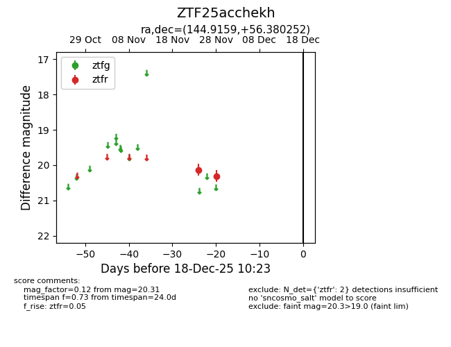
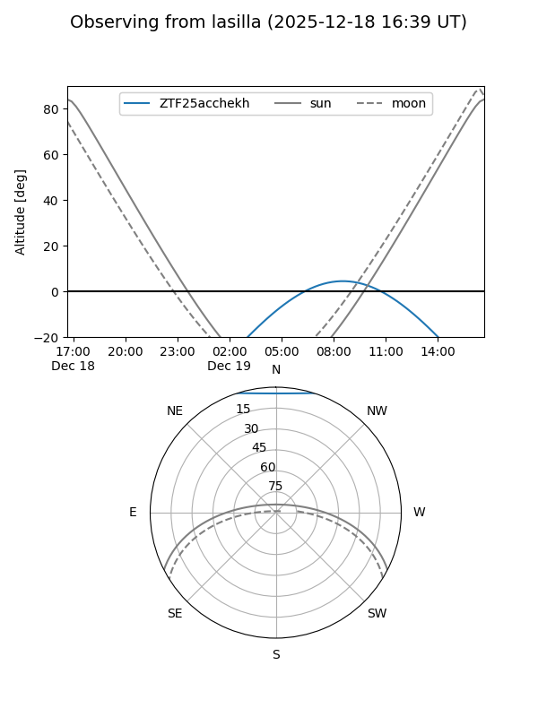
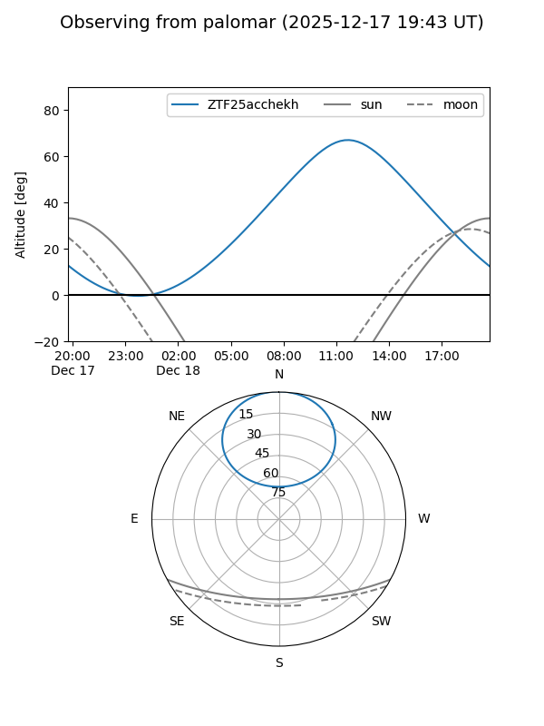

ZTF25acchekh
Target ZTF25acchekh at 2025-12-18 11:17
Aliases and brokers:
FINK: fink-portal.org/ZTF25acchekh
Lasair: lasair-ztf.lsst.ac.uk/objects/ZTF25acchekh
ALeRCE: alerce.online/object/ZTF25acchekh
alt names
ZTF25acchekh (ztf,fink_ztf)
Coordinates:
equatorial (ra, dec) = 144.9159,+56.38025
equatorial (HMS+DMS) = 09:39:39.83,+56:22:48.91
galactic (l, b) = (158.6368,+45.21849)
Photometry
last ztfr=20.31
2 ztfr detections
Lightcurve

Visibility


Additional plots